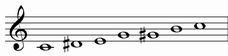
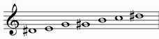
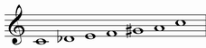
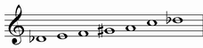
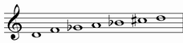
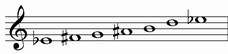
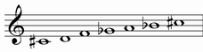
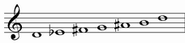

| GRADE | NAME | NOTES | NOTES TRANSPOSED IN C |
| I | AUGMENTED |  | |
| II | AUGMENTED INVERSE |  |  |
AUGMENTED |
It starts from the first grade of augmented scale
Structure: 313131
| chords over first notes: | |
| Triad: | Seventh chord: |
| augmented | major seventh with augmented fifth |
|
|
Chord simbols: C+, C^(#5)
There are only 4 transposition of this mode:



every other trasposition contains the same (or enharmonic) notes of one of theese.
AUGMENTED INVERSE |
It starts from the second grade of augmented scale
Structure: 131313
| chords over first notes: |
| Triad: |
| augmented |
|
There are only 4 transposition of this mode:


every other trasposition contains the same (or enharmonic) notes of one of theese.